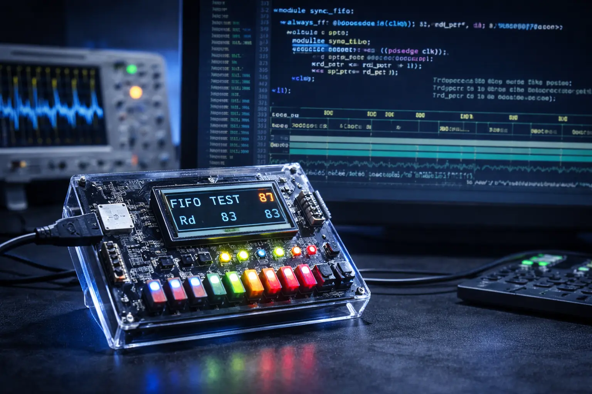
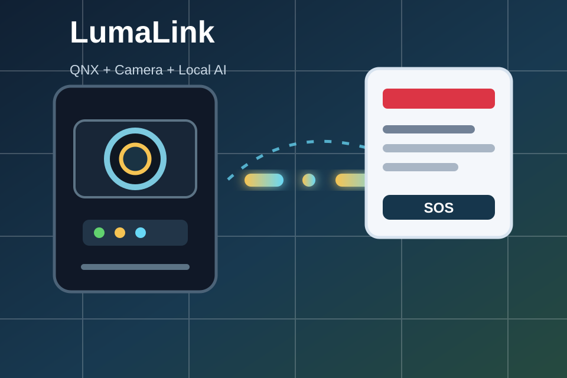
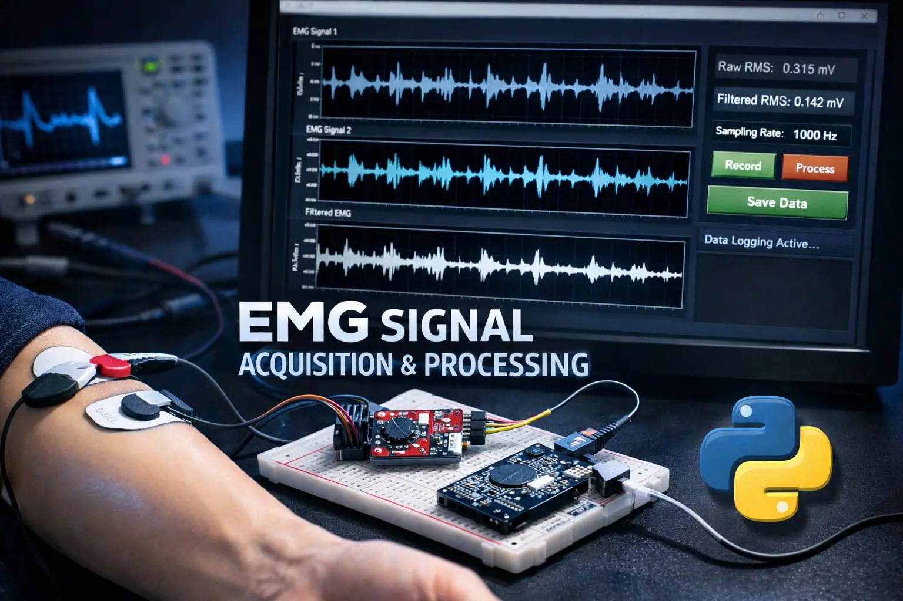
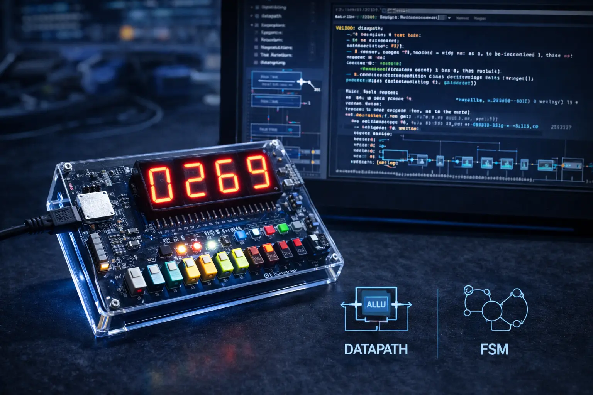
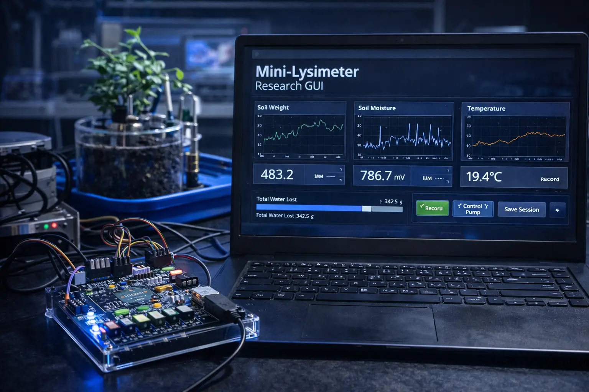
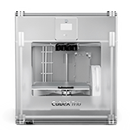
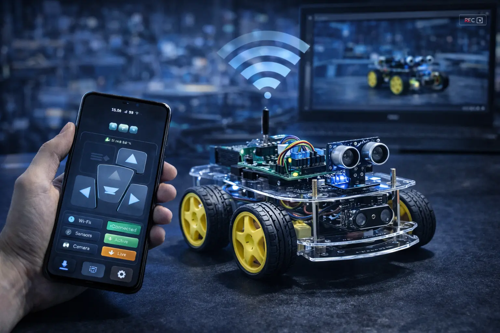
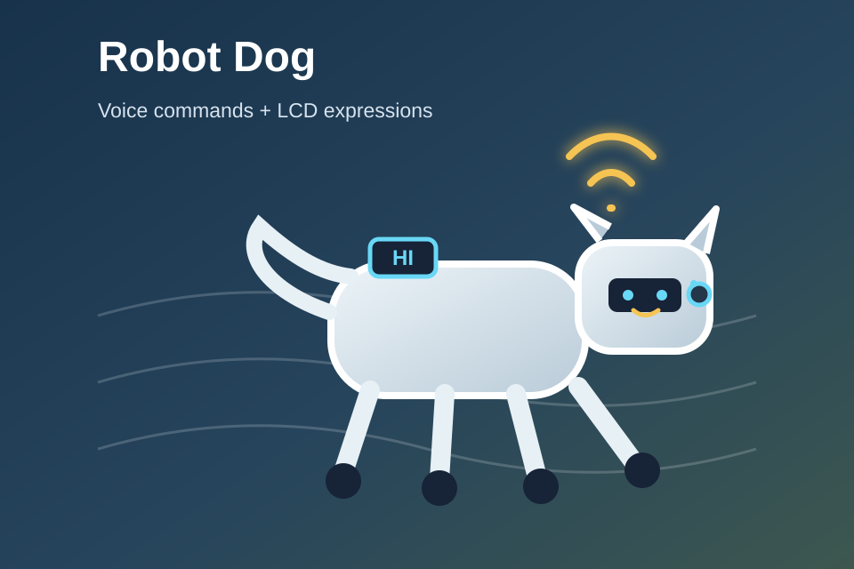
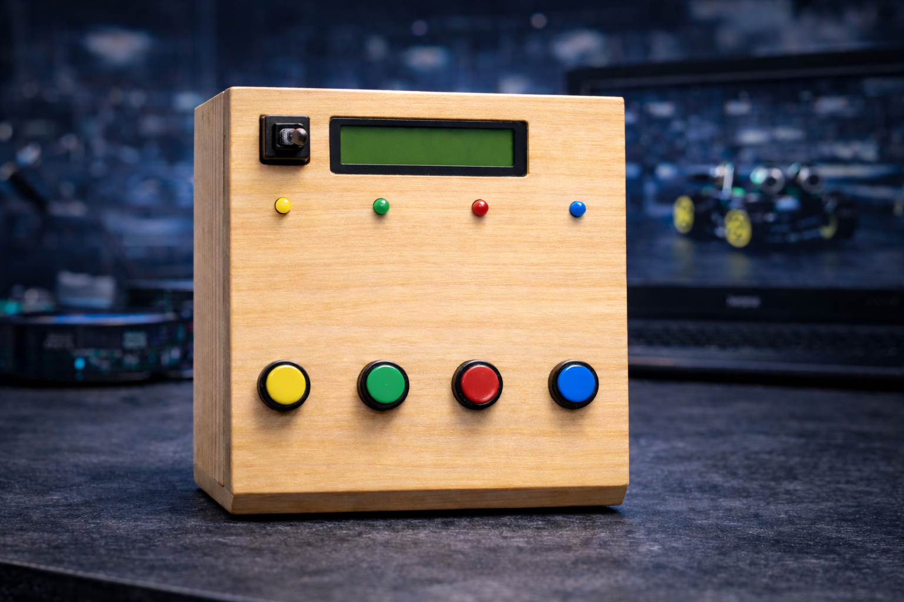

02 // PROJECTS
Projects
A cross-section of RTL, FPGA, embedded, sensing, research, robotics, and real-time work. Each project preserves the original technical scope and source link.

RTL // VERIFICATION
Synchronous FIFO
Parameterized design, flags, pointer logic, and a self-checking testbench.SystemVerilog · verification →
QNX // REAL-TIME
LumaLink
Optical emergency messaging with camera capture and local processing.Raspberry Pi · QNX →
INSTRUMENTATION
EMG Signal Pipeline
Capture, serial streaming, processing, and visualization.Python · Arduino →
FPGA // RTL
Arithmetic System
Button-driven operand capture and add/subtract logic.Verilog · LED output →
RESEARCH // DAQ
Mini-Lysimeter Research GUI
A research-friendly capture tool integrating NI-DAQ and Arduino.Python · NI-DAQ →
HARDWARE REBUILD
CubeX Trio Conversion
From proprietary platform to a repairable open-source printer.Marlin · motion control →
ROBOTICS // IOT
Autonomous Robotic Car
Motor control, sensing, and wireless operation.Embedded control →
ROBOTICS
Verbal-Responsive Robot Dog
Command response with expressive feedback.Embedded systems →
EMBEDDED // UI